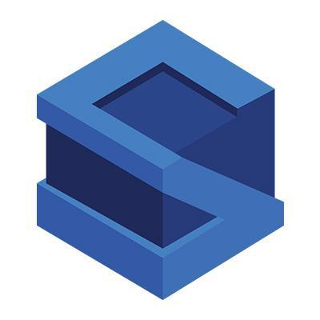
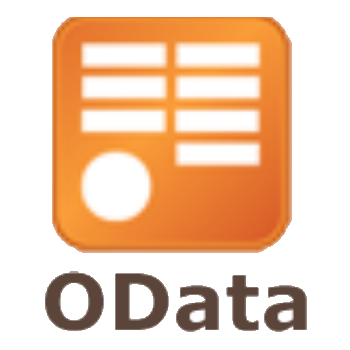
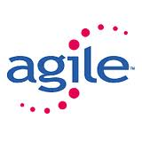
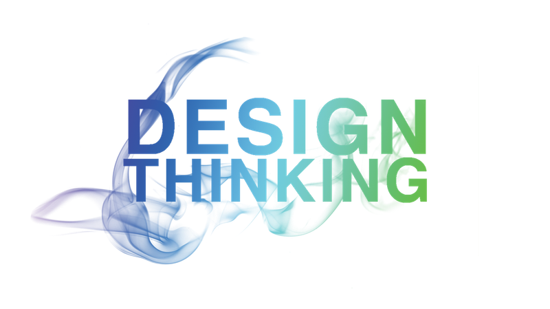
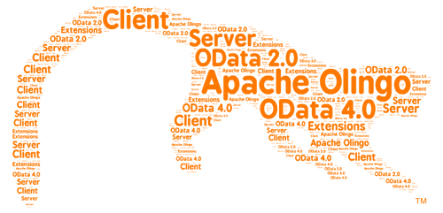
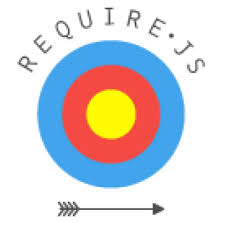

Beta Site
Last Updated:17th Aug'15
Utsav Chobe
9
years
utsav.chobe@gmail.com
in.linkedin.com/in/utsavchobe
Skills
UI 5
CSS3
Javascript
HTML5
Java
Cordova
jQuery
Responsive

Struts
Hibernate
AngularJs
BackboneJs
SAP Fiori
UML

OData
XML - XSL

Agile - Scrum

Design Thinking
Toastmaster

Apache Olingo
SQL
Underscore

RequireJs
Education
OxfordUniversity, UK
Responsive Web Design
OpenSAP, Online
Designing Fiori App & Design Thinking
FLMI, USA
Life Insurance - LOMA 280 & LOMA 290
OpenSAP, Online
Personas
IET - DAVV, India
Bachelors in Engineering
Publications
Blogs
OData enablement for PO Stack - BPM & CAF, Facade way
Bird's eye view of an SMP/HCPms application - How does HCPms, SMP3-SDK, Kapsel, Gateway, PO, HCC fit together?
Synopsis
Technology
SAP UI5
(Mobile/Desktop/Responsive), Fiori Apps & Extensions
Javascript
Development using MVVM Pattern
Java, J2EE
Struts, Hibernate, Core Java
Mobile App
accessible on Mobile, Tablet & Web
Technical
Presales
Solutioning
Team Lead
Experience
NFT
- Non Functional Testing for performance optimization
Mocking
Framework for automated testing with JUnit
Build Tools
- ANT, Gradle, Grunt
Process & Management
Agile
Methodology - Scrum Master
Product
Management & Release Lifecycle experience
Leading & working with
Testing
& Project
Maintenance
R & D
&
Customer Delivery
(Onsite) experience
Requirement Gathering
- Client interaction, Solutioning, Consultancy
Provided Training
Design Thinking, Agile, Java, SAP UI5, Fiori
Toastmasters
VP Membership - Amdocs, Pune Chapter. Secretary - CSC, Indore Chapter
Organizations
CompriseIT
Amdocs
CSC
Birlasoft
Experience Inventory
2015
CompriseIT, UK
Current Organisation
UI/UX - Creating custom solutions for clients using SAP UI5 - 5 Projects
UI/UX - Creating mobile apps with offline connectivity - 2 Projects
UI/UX - Customizing Fiori Apps for meeting customer needs - Approve Requisitions & Track Purchase Order
UI/UX - Design & Estimates
Architecture - Creating reusable framework for offline apps using Kapsel Plugins and Object Oriented Javascript
Setting up and configuring Hana Cloud Connector (HCC)
Configuring Hana Cloud Platform Mobile Services (HCPms) and developing apps using the mobile services
SMP3 SDK - Using Kapsel Plugins - Logon, Secure Storage, Offline
CompriseIT - Java Stack & Integration
OData Enablement using OData4J & Apache Olingo - For Process Orchestration Server - CAF and BPM
Working on Java based CAF - Composite Application Framework, WebDynpro Java
Working on BPM - Business Process Modeling, implementing custom functions
Exposure to PI - Process Integration
2013
Amdocs
Leading development as scrum master for 2 products - MCSS, SE
Working on design & performing estimates
Developing the solution using front end technologies - UXF Framework built using Backbone, Underscore, Require
Java development for creating REST based backend services, integrating with other products. - Apache Jax-RS
Java - Creating automated test using proprietary mocking frameworks
Java, Hibernate - Working on supporting releases, maintenance & enhancement of a product
Java, Hibernate & NFT - Performing non functional testing. Identifying key bottleneck areas
Java development - Developing Utilites for XML inflation
2011
CSC
Java, Struts - Migrating product's code to a unified architecture of the organisation
Java, JSPs, Struts - Working on developing UI screens using JSPs, Struts and developing functionalities
XML, XSL - Worked on a module using XSL transformations for generating code files from XMLs (which were output of a WYSIWYG tool)
XSL Transformations - Worked on enhancing the performance of the XSL module stated above.
2008
Birlasoft
Java, Struts, Hibernate AJAX - Developing a workflow based project.
Working on developing UI screens using JSPs, Struts and developing functionalities
Developing POC for adopting Hibernate framework
Java, Struts, Hibernate - Working on maintenance and adding functionalities to existing application